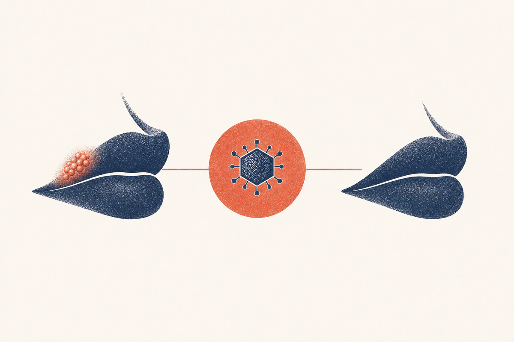

Key Takeaways
- Cold sores are caused by herpes simplex virus type 1 (HSV-1), which establishes lifelong latency in nerve cells and reactivates periodically. Most people are infected by adulthood.[1][2]
- An outbreak follows a predictable course through five stages, tingling, blistering, weeping, crusting, and healing, typically lasting 7 to 10 days total.[4][6]
- Oral antivirals (valacyclovir, acyclovir, famciclovir) are first-line and are most effective when started in the first 24 hours, ideally at the earliest tingling.[8][14]
- Topical antiviral creams (docosanol, penciclovir, acyclovir cream) offer only marginal benefit, roughly half a day to a day of faster healing, and do not meaningfully reduce viral shedding.[5][15]
- A one-day course of valacyclovir (2 grams twice, 12 hours apart) and single-dose famciclovir (1,500 mg) are both short, effective regimens for episodic treatment.[8][9]
- Recurrent outbreaks are triggered most often by ultraviolet light (sun), fever or illness, stress, and menstruation. Sunscreen on the lips reduces sun-triggered outbreaks.[18][4]
- Frequent or severe recurrences can be reduced with daily suppressive antiviral therapy, an option worth discussing with a clinician.[13][12][19]

What Are Cold Sores, and What Causes Them?
A cold sore, or herpes labialis, is a cluster of small, fluid-filled blisters that forms on or around the lip, almost always along the outer edge where lip meets skin. It is caused by herpes simplex virus type 1 (HSV-1), a member of the herpesvirus family and one of the most widespread human infections on the planet. The World Health Organization estimated in 2016 that about 3.7 billion people under age 50, roughly 67 percent, carry HSV-1 infection.[1]
Infection is lifelong. After an initial infection, which often produces no noticeable symptoms, the virus travels along sensory nerves to a cluster of nerve cell bodies called the trigeminal ganglion, where it enters a dormant (latent) state.[7][5] It never fully clears from the body. Periodically, in response to a trigger such as sun exposure, fever, or stress, the virus reactivates, travels back down the nerve to the skin of the lip, and produces another crop of blisters. This is why cold sores keep coming back in the same general spot.
In the United States, HSV-1 seroprevalence (the share of people with antibodies to the virus) has actually declined over recent decades, though it still rises steadily with age, from roughly one-quarter of teenagers to well over half of adults by middle age.[2] Because the virus is so common and usually mild, many people never realize they carry it.
It is worth distinguishing cold sores from genital herpes. Both are caused by herpes simplex viruses, but classic cold sores on the lip are caused almost always by HSV-1, while genital herpes may be caused by HSV-2 or, increasingly, HSV-1 transmitted through oral-genital contact.[19] This guide focuses on oral cold sores. See our separate guide on genital herpes treatment for HSV-2 genital infection.
The Five Stages of a Cold Sore Episode
A cold sore does not appear all at once. It evolves through a recognizable sequence of stages that clinicians use to judge how far along an outbreak is and how best to treat it.[4][6]
- Tingling (prodrome): A day or two before any blister appears, the area may itch, burn, or tingle. This is the single most important clinical signal, because antiviral treatment started now is far more effective than treatment started later.[8]
- Blistering: Small, fluid-filled blisters erupt in a cluster, usually over 12 to 48 hours. They are painful and highly contagious; the fluid contains live virus.[7]
- Weeping (ulceration): The blisters break open and merge into a shallow, weepy, painful ulcer. This is the peak of shedding and the time patients find the lesion most bothersome and most infectious.[6]
- Crusting (scabbing): A yellowish or brown crust forms over the ulcer as it begins to dry. The crust may crack and bleed if stretched. The sore is still contagious through this stage.[4]
- Healing: The crust flakes off to reveal new pink skin, which may remain slightly red for a few more days. Complete healing without treatment typically takes 7 to 10 days, and up to 14 days in more severe cases.[5]
Recognizing the prodrome is the most useful skill a patient can develop. The tingle means the virus is reactivating and beginning to multiply in the skin, which is precisely when antivirals do their best work. Waiting until a full blister is present means accepting a longer and more painful episode.[8][7]
How HSV-1 Spreads and Who Is Most at Risk
HSV-1 spreads through direct contact with infected skin or saliva, most commonly through kissing or sharing items that touch the mouth such as lip balm, utensils, razors, or towels.[1][19] It can be transmitted even when no sore is visible, because the virus can be shed asymptomatically in saliva. This silent shedding is a major reason the infection is so widespread.[7][5]
Most people acquire HSV-1 in childhood through non-sexual contact, such as a kiss from an infected family member. The initial, or primary, infection is often so mild it goes unnoticed, though in young children it can cause a more dramatic syndrome called herpetic gingivostomatitis, with fever and painful sores throughout the mouth.[7][6]
Certain groups are at higher risk of more severe or more frequent disease. People with weakened immune systems, whether from chemotherapy, organ transplant medications, or HIV, can have larger, more persistent, and more painful outbreaks.[19][7] People with atopic dermatitis (eczema) are at risk of a serious complication in which the virus spreads across broken skin, a condition called eczema herpeticum that can require emergency care.[27]
Two other important points about transmission. First, HSV-1 can be transmitted to a partner's genitals during oral sex, an increasingly common cause of new genital herpes infections.[19] Second, the virus can be passed to a newborn during birth, which can be life-threatening, so anyone with an active cold sore should avoid close contact with infants and tell their clinician if they are pregnant and have symptoms.[19][1]
Common Triggers for Recurrent Outbreaks
The virus reactivates in response to specific triggers, and identifying your own is one of the most practical forms of prevention. The best-documented triggers include:
- Ultraviolet (sun) light: The clearest and best-studied trigger. Sun exposure reliably induces outbreaks in many people, and a landmark randomized trial showed that applying sunscreen to the lips reduces the frequency of sun-induced cold sores.[18]
- Fever and illness: The name "fever blister" exists for a reason. Upper respiratory infections and other febrile illnesses commonly precede a flare, likely through immune and metabolic stress.[4][6]
- Emotional or physical stress: Stress is frequently reported by patients as a trigger, and periods of high stress and poor sleep are associated with more frequent recurrence.[4][7]
- Menstruation and hormonal shifts: Some women notice outbreaks timed to their menstrual cycle.[6]
- Local trauma: Dental work, lip injury, or even cosmetic procedures such as dermal fillers on the lips can provoke an outbreak, which is why the 2021 guideline on HSV-1 and cosmetic interventions recommends specific precautions.[3]
Not every recurrence has an obvious trigger. But when a patient can link their outbreaks to one cause, such as sun, targeted prevention becomes straightforward, often as simple as lip sunscreen before outdoor exposure.[18][12]
Decision Framework: Treat at Home, See a Doctor, or Get Urgent Care
Most cold sores resolve on their own and can be managed at home. But some situations warrant a clinician's input or urgent evaluation.
| Scenario | Recommended approach | Rationale |
|---|---|---|
| A typical small lip sore in an otherwise healthy person, occasional recurrence | Self-care at home; consider early oral antiviral if you have a prescription on hand[4] | Uncomplicated cold sores are self-limited and resolve without treatment. |
| Frequent recurrences (roughly four to six or more per year) | Schedule a clinician visit to discuss suppressive therapy[13][19] | Daily antivirals can meaningfully reduce recurrence frequency. |
| Large, painful, or persistently non-healing sore beyond two weeks | See a clinician | May need oral antivirals, a culture to confirm, or investigation of another cause.[7] |
| Cold sores with a weakened immune system, or widespread skin involvement in someone with eczema | Prompt clinician or urgent care evaluation[19][27] | Risk of disseminated infection or eczema herpeticum, which can be serious. |
| Eye pain, redness, or vision change with a sore near the eye | Urgent care or emergency department the same day[4][7] | HSV can infect the cornea (herpes keratitis) and threaten vision. |
| Signs of severe illness: high fever, confusion, stiff neck, or sores spreading widely | Emergency department | Rare but serious disseminated or central nervous system HSV infection.[19] |
Oral Antivirals: The Evidence
Three oral antiviral drugs, all nucleoside analogues that block viral DNA replication, are approved and commonly used for recurrent cold sores: acyclovir, valacyclovir, and famciclovir.[5][14] They are the first-line choice for anyone who wants a shorter, milder episode, and their benefit is directly tied to how early they are started.
Acyclovir
Acyclovir is the original and most studied antiviral. A standard episodic regimen is 400 mg taken five times daily for five days, though 200 mg five times daily is an alternative. Reviewed in the aggregate, oral acyclovir shortens the episode by roughly one to two days on average and reduces pain duration.[5][4] Its main drawback is four or five times daily dosing, which some patients find hard to remember.
Valacyclovir
Valacyclovir is a prodrug that the body converts to acyclovir, delivering far higher blood levels with far fewer doses. For cold sores the FDA-approved regimen is a single day of treatment: 2 grams taken twice, 12 hours apart.[20] In two large randomized trials, this one-day course, started at the earliest symptom, reduced episode duration by about a day on average (median reduction 1.0 day, P equals 0.001) and significantly shortened time to healing and time to pain relief.[8] Because it requires only two doses, valacyclovir is the most convenient oral option and is the usual first choice in telehealth prescribing for cold sores.
Famciclovir
Famciclovir can also be given as a single patient-initiated dose of 1,500 mg, which in a randomized trial reduced median healing time to about 4.4 days versus 6.2 days for placebo, a benefit of nearly two days.[9] Like valacyclovir, its convenience is appealing, but it is used less often than valacyclovir for cold sores in practice.
| Drug | Typical episodic regimen | Dosing frequency | Notes |
|---|---|---|---|
| Valacyclovir | 2 g twice, 12 hours apart (one day)[20] | 2 doses total | Most convenient oral option. |
| Famciclovir | 1,500 mg single dose[9] | 1 dose | Single-dose convenience. |
| Acyclovir | 400 mg five times daily for 5 days[5] | 5 times daily | Lower cost, more doses to remember. |
The shift toward short, high-dose regimens is genuinely useful. Valacyclovir's one-day, two-dose course and famciclovir's single-dose regimen are just as effective as multi-day courses when started early, and they are far easier to complete.[8][9][26] This is a major reason a same-day telehealth visit can be the difference between a short, mild outbreak and a full two-week one.
Topical Treatments: What the Evidence Honestly Shows
It is common to reach for an over-the-counter cream first, and there is a place for topicals, but their benefit is modest and it is important to be honest about what they can and cannot do. Prescription and over-the-counter topical antivirals for cold sores include:
- Docosanol 10% cream (Abreva), approved over the counter, which works by a different mechanism, interfering with the virus's entry into cells rather than blocking replication. In its pivotal trial it shortened healing time by about 18 hours (median roughly 4.1 versus 4.8 days for placebo).[11]
- Penciclovir 1% cream (Denavir), a prescription topical that shortened healing by roughly half a day to a day in its pivotal trial.[10]
- Acyclovir 5% cream, a topical form of the oral drug, with similarly modest benefit.[5][15]
The consistent finding across the literature, including the evidence-based review by Cernik and colleagues and the 2023 network meta-analysis by Koe and colleagues, is that topical antivirals shorten the episode by only about half a day to a day, and they are less effective than oral antivirals.[5][14][15] Topicals also do not meaningfully reduce viral shedding, so they should not be relied on to prevent transmitting the virus to someone else.[15]
One combination product, acyclovir 5% with 1% hydrocortisone cream, adds an anti-inflammatory to the antiviral and was shown to reduce progression to ulcerated lesions, in part by dampening the inflammatory damage that makes cold sores painful and slow to heal.[16][17] A systematic review found adding a topical corticosteroid to antiviral therapy modestly improves outcomes, but the evidence base remains smaller than for oral therapy.[25]
The practical bottom line: if you only have a topical on hand, it can trim a day off healing. But if your goal is the shortest, least painful episode, oral antiviral therapy started at the tingle is the stronger option.[14][5]
Comparison Table: Oral Antivirals vs Topicals vs No Treatment
| Treatment | Typical regimen | Approx. episode reduction | Reduces shedding? | Prescription needed? |
|---|---|---|---|---|
| Valacyclovir (oral) | 2 g twice, 12 hours apart, one day[20] | ~1 day[8] | Yes | Yes |
| Famciclovir (oral) | 1,500 mg single dose[9] | ~1 to 2 days[9] | Yes | Yes |
| Acyclovir (oral) | 400 mg five times daily for 5 days[5] | ~1 to 2 days[5] | Yes | Yes |
| Docosanol 10% cream | Apply five times daily[11] | ~0.7 day (18 hours)[11] | No (minimal) | No (OTC) |
| Penciclovir 1% cream | Apply every 2 hours while awake[10] | ~0.5 to 1 day[10] | No (minimal) | Yes |
| No treatment | None | Baseline (7 to 10 days) | No | No |
The 24-Hour Timing Window: Why It Matters Most
If there is one clinical lesson to take from this guide, it is that antiviral treatment is a race against the virus. HSV-1 replicates fastest in the first hours after reactivation, and antivirals work by interrupting that replication. Start them during the prodrome, at the first tingle or itch, and you blunt the outbreak before it matures. Wait until several blisters have formed, and the virus has already done much of its work.[8][7]
The valacyclovir cold sore trials demonstrate this directly. When the one-day course was started in the prodrome or at the earliest visible bump (papule), the benefit was largest, with shorter episodes and faster healing and pain relief. Patients who treated a fully developed cluster of blisters still benefited, but less.[8] The practical consequence is that "wait and see" is usually the wrong strategy for someone who wants a short, mild course.
This timing sensitivity is exactly why telehealth works so well for cold sores. The window to act is a matter of hours to a day, often before an in-person appointment can happen. A clinician can review symptoms, confirm the likely diagnosis, and send a prescription for a same-day oral antiviral, which the patient can start immediately, rather than waiting days for a clinic slot.[20][8] Telehealth prescribing of antivirals for cold sores is routine, but it works best for people who recognize their own prodrome and seek care at the very first tingle.
Our in-depth companion guide covers valacyclovir for cold sores, and how to get rid of a cold sore fast walks through the practical steps.
Suppressive Therapy: When Daily Medication Makes Sense
For a minority of people, cold sores are frequent, painful, or both, and treating each episode reactively is not enough. Daily suppressive therapy, taking a low-dose oral antiviral every day to prevent outbreaks before they start, is the evidence-based answer.[13][12]
Who should consider suppressive therapy? Reasonable candidates include people with four or more outbreaks a year, people whose outbreaks are severe or disfiguring, people in high-contact settings (such as healthcare or childcare), immunocompromised patients, and people with prominent sun or stress triggers they cannot avoid.[19][7][4] A meta-analysis of preventive trials found oral antivirals reduce the frequency of recurrent herpes labialis, and a Cochrane review of prevention interventions similarly supports the approach.[13][12]
Typical suppressive regimens for recurrent cold sores include acyclovir 400 mg twice daily, valacyclovir 500 to 1,000 mg daily, or famciclovir 250 mg twice daily, with dose and duration individualized.[5][19] Suppression does not cure the infection, and outbreaks may return slowly after the medication is stopped, but it reliably cuts the number and severity of episodes while taken.[13]
Suppressive therapy is a conversation, not a default. For most people with a couple of mild outbreaks a year, episodic treatment started at the first tingle is simpler and sufficient.[4]
Prevention and Reducing Transmission
Preventing your own outbreaks
The single best-studied preventive step is sun protection. A randomized controlled trial showed that applying sunscreen to the lips significantly reduced sun-induced cold sores, making lip balm with SPF the most evidence-based daily habit for people with a sun trigger.[18] Avoiding known triggers when possible, managing stress, getting adequate sleep, and treating febrile illness promptly can also help.[4][12]
Preventing spread to others
Because HSV-1 is so common and can be shed without symptoms, no one can reduce transmission risk to zero. But during any active outbreak you should:
- Avoid kissing and close facial contact, especially with newborns and infants.[19][1]
- Avoid sharing items that touch the mouth, including lip balm, utensils, cups, razors, and towels.[1][21]
- Avoid oral sex during an outbreak, since HSV-1 can transfer to a partner's genitals.[19]
- Wash hands after touching the sore, and try not to pick or scratch, which can spread virus to your own fingers or eyes.[21][4]
If you have a cold sore, avoid close contact with anyone who is immunocompromised or has active eczema, because those individuals are at higher risk of a serious, widespread infection.[27][19]
What's Changed in 2024 to 2026
There has been no fundamental change in the treatment of cold sores in the last few years, but the evidence base has grown in ways that reinforce current practice. Highlights include:
- Confirmation that oral beats topical. A 2023 systematic review with network meta-analysis across 30-plus trials reaffirmed that systemic (oral) antivirals outperform topical agents for preventing and managing herpes labialis, and a 2025 systematic review mapped the full topical-versus-systemic landscape to the same conclusion.[14][15]
- Standardized outcome measures. A 2026 meta-analysis of orolabial herpes clinical trials argued for consistent endpoint definitions across studies, reflecting a field maturing toward better, more comparable efficacy data.[26]
- Guidance on cosmetic procedures. A 2021 guideline (still the operative reference) outlines prophylaxis for patients with a history of HSV-1 who undergo lip fillers, resurfacing, or laser procedures, recommending consideration of antiviral prophylaxis to prevent procedure-triggered outbreaks.[3]
- Telehealth normalization. Short-course oral antivirals are now routinely prescribed through synchronous telehealth visits, which has made same-day treatment at the earliest symptom far more accessible than in the past.[20][8]
None of this changes the core message: oral antivirals started early remain the standard of care, and the window to act is measured in hours.[14][8]
What Doesn't Work, and What Is Unproven
The internet is full of cold sore remedies, most with little or no rigorous support. Being honest about what does not work saves time, money, and prolonged pain.
- Toothpaste, rubbing alcohol, nail polish remover, bleach: No evidence of benefit, and several of these are actively irritating and can delay healing by inflaming the skin.[21][4]
- Popping or draining the blister: This does not speed healing and increases the chance of bacterial infection and of spreading the virus to surrounding skin.[21]
- Lysine supplements: Despite widespread use, the clinical evidence that oral lysine reliably prevents or shortens cold sores is inconsistent, and major reviews have not recommended it as a standard therapy.[5][15]
- Light and laser therapy: Small studies and a systematic review suggest low-level laser or photodynamic therapy may reduce recurrence in some patients, but the evidence is modest and these are not yet a standard, widely reimbursed treatment.[23][24]
Apply the same skepticism to any product that promises a cure. There is currently no cure that clears HSV-1 from the body, and any claim otherwise should be treated with caution. Effective treatment shortens episodes and prevents recurrence, but the virus remains.[7][1]
Complications and Red Flags
Cold sores are usually benign, but HSV-1 can occasionally cause serious problems, and knowing the warning signs matters.
Eye involvement (herpes keratitis)
If HSV infects the eye, it can cause corneal inflammation, scarring, and vision loss. A cold sore near the eye, or any new eye pain, redness, light sensitivity, or blurred vision, should prompt urgent same-day evaluation.[4][7]
Eczema herpeticum
In people with atopic dermatitis, HSV can spread across the broken skin into a widespread infection with fever and numerous blisters. This is a true medical emergency that may require intravenous antiviral therapy.[27]
Immunocompromised patients
People who are immunocompromised can develop larger, deeper, slower-healing lesions that persist for weeks, and in rare cases the virus can spread beyond the skin. These patients should have a low threshold to seek care and may need longer or intravenous treatment.[19][7]
Intraoral and widespread infection
Occasionally HSV-1 causes sores inside the mouth (see cold sores inside the mouth) or, in a severe primary infection, throughout the gums and tongue. Persistent, very painful, or recurrent intraoral ulcers warrant a clinician's evaluation, in part to distinguish them from other causes such as aphthous ulcers.[22][7]
Seek care promptly for a cold sore that has not healed within about two weeks, is unusually large or painful, or is accompanied by fever, spreading rash, or eye symptoms.[7][4]
Frequently Asked Questions
Not exactly. Cold sores on the lip are almost always caused by HSV-1, while genital herpes may be caused by HSV-2 or by HSV-1 transmitted through oral sex. They are related but distinct infections, and oral HSV-1 can sometimes spread to the genitals.[19]
The fastest approach is to start an oral antiviral at the very first tingle. A one-day valacyclovir course (2 grams twice, 12 hours apart) or single-dose famciclovir started in the prodrome can meaningfully shorten the episode.[8][9] See our how to get rid of a cold sore fast guide for the full protocol.
Yes. Short-course oral antivirals for recurrent cold sores are commonly and appropriately prescribed through synchronous telehealth visits. A clinician can evaluate symptoms and prescribe valacyclovir, acyclovir, or famciclovir the same day.[20][8] Telehealth is especially useful because the treatment window is measured in hours.
References
- World Health Organization. Herpes simplex virus fact sheet WHO. Updated May 30, 2025.. who.int herpes fact sheet
- Chemaitelly H, Nagelkerke N, Omori R, Abu-Raddad LJ. Characterizing herpes simplex virus type 1 and type 2 seroprevalence declines and epidemiological association in the United States PLoS One. 2019;14(6):e0214151.. doi:10.1371/journal.pone.0214151
- Vaghela D, Davies E, Murray G, Convery C, Walker L. Guideline for the management of herpes simplex 1 and cosmetic interventions Journal of Clinical and Aesthetic Dermatology. 2021;14(11 Suppl 1):S11-S14.. PMC8565875
- Opstelten W, Neven AK, Eekhof J. Treatment and prevention of herpes labialis Canadian Family Physician. 2008;54(12):1683-1687.. PMID 19074705
- Cernik C, Gallina K, Brodell RT. The treatment of herpes simplex infections: an evidence-based review Archives of Internal Medicine. 2008;168(11):1137-1144.. doi:10.1001/archinte.168.11.1137
- Leung AKC, Barankin B. Herpes labialis: an update Recent Patents on Inflammation & Allergy Drug Discovery. 2017;11(2):107-113.. doi:10.2174/1872213X11666171003151717
- Woo SB, Challacombe SJ. Management of recurrent oral herpes simplex infections Oral Surgery, Oral Medicine, Oral Pathology, Oral Radiology, and Endodontology. 2007;103(Suppl):S12.e1-18.. doi:10.1016/j.tripleo.2006.11.004
- Spruance SL, Jones TM, Blatter MM, Vargas-Cortes M, Barber J, Hill J, et al. High-dose, short-duration, early valacyclovir therapy for episodic treatment of cold sores: results of two randomized, placebo-controlled, multicenter studies Antimicrobial Agents and Chemotherapy. 2003;47(3):1072-1080.. doi:10.1128/AAC.47.3.1072-1080.2003
- Spruance SL, Bodsworth N, Resnick H, Conant M, Oeuvray C, Gao J, et al. Single-dose, patient-initiated famciclovir: a randomized, double-blind, placebo-controlled trial for episodic treatment of herpes labialis Journal of the American Academy of Dermatology. 2006;55(1):47-53.. doi:10.1016/j.jaad.2006.02.031
- Spruance SL, Rea TL, Thoming C, Tucker R, Saltzman R, Boon R. Penciclovir cream for the treatment of herpes simplex labialis. A randomized, multicenter, double-blind, placebo-controlled trial JAMA. 1997;277(17):1374-1379.. PMID 9134943
- Sacks SL, Thisted RA, Jones TM, Barbarash RA, Mikolich DJ, Ruoff GE, et al. Clinical efficacy of topical docosanol 10% cream for herpes simplex labialis: a multicenter, randomized, placebo-controlled trial Journal of the American Academy of Dermatology. 2001;45(2):222-230.. doi:10.1067/mjd.2001.116215
- Chi CC, Wang SH, Delamere FM, Wojnarowska F, Peters MC, Kanjirath PP. Interventions for prevention of herpes simplex labialis (cold sores on the lips) Cochrane Database of Systematic Reviews. 2015;(8):CD010095.. doi:10.1002/14651858.CD010095.pub2
- Rahimi H, Mara T, Costella J, Speechley M, Bohay R. Effectiveness of antiviral agents for the prevention of recurrent herpes labialis: a systematic review and meta-analysis Oral Surgery, Oral Medicine, Oral Pathology, Oral Radiology. 2012;113(5):618-627.. doi:10.1016/j.oooo.2011.10.010
- Koe KH, Veettil SK, Maharajan MK, Syeed MS, Nair AB, Gopinath D. Comparative efficacy of antiviral agents for prevention and management of herpes labialis: a systematic review and network meta-analysis Journal of Evidence-Based Dental Practice. 2023;23(1):101778.. doi:10.1016/j.jebdp.2022.101778
- Mancini A, Inchingolo AM, Marinelli G, Trilli I, Sardano R, Pezzolla C, et al. Topical and systemic therapeutic approaches in the treatment of oral herpes simplex virus infection: a systematic review International Journal of Molecular Sciences. 2025;26(17):8490.. doi:10.3390/ijms26178490
- Hull CM, Levin MJ, Tyring SK, Spruance SL. Novel composite efficacy measure to demonstrate the rationale and efficacy of combination antiviral-anti-inflammatory treatment for recurrent herpes simplex labialis Antimicrobial Agents and Chemotherapy. 2014;58(3):1273-1278.. doi:10.1128/AAC.02150-13
- Hull CM, Harmenberg J, Arlander E, Aoki F, Bring J, Darpö B, et al. Early treatment of cold sores with topical ME-609 decreases the frequency of ulcerative lesions: a randomized, double-blind, placebo-controlled, patient-initiated clinical trial Journal of the American Academy of Dermatology. 2011;64(4):696.e1-11.. doi:10.1016/j.jaad.2010.08.012
- Rooney JF, Bryson Y, Mannix ML, Dillon M, Wohlenberg CR, Banks S, et al. Prevention of ultraviolet-light-induced herpes labialis by sunscreen The Lancet. 1991;338(8780):1419-1422.. doi:10.1016/0140-6736(91)92723-f
- Centers for Disease Control and Prevention. Herpes: STI treatment guidelines, 2021 CDC Division of STD Prevention.. cdc.gov herpes treatment guidelines
- U.S. Food and Drug Administration. VALTREX (valacyclovir hydrochloride) prescribing information FDA.. FDA Valtrex label
- American Academy of Dermatology. Cold sores: diagnosis and treatment AAD public education.. aad.org cold sores
- Tovaru S, Parlatescu I, Tovaru M, Cionca L, Arduino PG. Recurrent intraoral HSV-1 infection: a retrospective study of 58 immunocompetent patients from Eastern Europe Medicina Oral, Patología Oral y Cirugía Bucal. 2011;16(2):e163-169.. doi:10.4317/medoral.16.e163
- de Carvalho RR, de Paula Eduardo F, Ramalho KM, Antunes JL, Bezinelli LM, de Magalhães MH, et al. Effect of laser phototherapy on recurring herpes labialis prevention: an in vivo study Lasers in Medical Science. 2010;25(3):397-402.. doi:10.1007/s10103-009-0717-9
- Khalil M, Hamadah O. Association of photodynamic therapy and photobiomodulation as a promising treatment of herpes labialis: a systematic review Photobiomodulation, Photomedicine, and Laser Surgery. 2022;40(5):299-307.. doi:10.1089/photob.2021.0186
- Arain N, Paravastu SC, Arain MA. Effectiveness of topical corticosteroids in addition to antiviral therapy in the management of recurrent herpes labialis: a systematic review and meta-analysis BMC Infectious Diseases. 2015;15:82.. doi:10.1186/s12879-015-0824-0
- Sloan A, Mortezavi M, Gerhart J, Banerjee A, Alami NN, Najera I, et al. Orolabial and genital herpes clinical trials: a meta-analysis of endpoints Open Forum Infectious Diseases. 2026;13:ofaf776.. doi:10.1093/ofid/ofaf776
- Studdiford JS, Valko GP, Belin LJ, Bricker AR. Eczema herpeticum: a medical emergency Canadian Family Physician. 2012;58(12):1358-1361.. PMC3520662